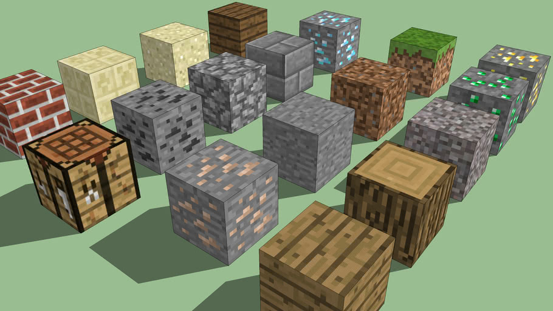

The world of Minecraft takes place within a three-dimensional grid of cubes, with each cube being occupied by a certain type of block, not all of which are necessarily cubic. There are different types of blocks; natural blocks such as grass, stone and ores that generate randomly within the world. There are also blocks that players can craft, such as a crafting table and a furnace. Resources can be extracted from blocks by hand or by using tools. Some of these resources are simply blocks in the player's inventory that can be placed elsewhere, while others are used as material to create other blocks or tools. Others yield no practical use whatsoever. Some blocks cannot be broken through normal survival means, e.g. bedrock, end portal frames, command blocks, nether and end portals, barriers and air.
